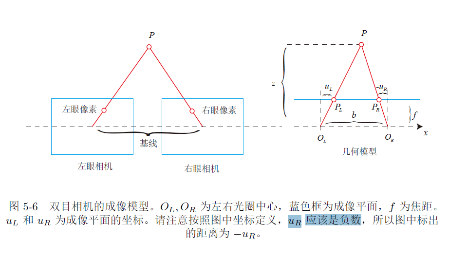

几个坐标系
针孔相机模型就是小孔成像模型，通过针孔后目标在成像平面上形成了一个倒立（通常缩小）的像。
借用十四讲里的图：
上图描述了相机坐标系中的$P$点经转换后在图像坐标系$x’O’y’$成像的过程。
需要注意，上图里$x’O’y’$图像坐标系的原点$O’$是成像平面与过光心直线的交点，下面要说的像素坐标系与图像坐标系在同一个平面上，但标度和原点不同，此图并没有画出。
上图为从坐在相机里内向外看的视角，像素坐标系的原点在图像左上角，$u$轴向右，$v$轴向下；图像坐标系原点在过光心直线与平面交点，$x$轴向右，$y$轴向下。
顺便提及，相机坐标系的原点设置在光心处，同向看去，$Z$轴朝外，$X$轴向右，$Y$轴向下。（另外俩坐标系没有Z轴）
坐标转换
相机坐标系$(X,Y,Z)$至图像坐标系$(x,y)$
$f$为相机焦距
图像坐标系$(x,y)$至像素坐标系$(u,v)$
$\alpha 和 \beta$是像素每米的转换比例，$c_x 和c_y$是两个坐标系原点的平移距离
再看一次
由以上两个转换推出相机坐标系$(X,Y,Z)$至像素坐标系$(u,v)$
使用齐次坐标可以将上述表达变为矩阵形式，以及再加上相机坐标系到世界坐标系的转换
$K$矩阵为相机的内参矩阵，相机标定的对象就是它
十四讲中说习惯会把Z乘到左边
如果对相机坐标系下的坐标进行归一化处理，那么$Z=1$，$P_{uv}=KP_c$，即乘以内参矩阵就得到了像素坐标。
所以像素坐标也被认为是对归一化平面上的坐标进行量化测量的结果。
针孔模型与透镜
小孔成像是将一大堆光线挡住只让“一束光”穿过去成像，凸透镜是把所有光线聚集起来成像。
知乎上图
https://www.zhihu.com/question/299247177
小孔成像可以理解为透镜成像在孔径（光圈）趋近于零的极限情况。另外当孔径趋近于零时，景深趋近于无穷，成像的亮度也趋于零。
双目相机模型
通过同一物体在双目左右成像面的像素坐标，判断物体的距离
图源十四讲

根据相似关系
注意$u_R$为负，进而推出$z$的大小
双目模型估计深度的难点在于，如何精确的确定左右图像的像素对应关系，计算视差$d$的难度很大
双目相机由于$d$最小为1像素，所以$Z$的测量是有上限的
结构光与ToF相机
结构光相机向物体发射光斑或者条纹，再观察其形变来判断距离。
ToF相机发射光线，测量返回光线的时间，来计算距离，Time of Flight。
ToF相机和激光雷达有相似的地方，主动向外发射光线并用时间测距，不同的是激光雷达直接给出3D点云，ToF是给出一个RGB图像和一个深度图，不是一个3D的点云。